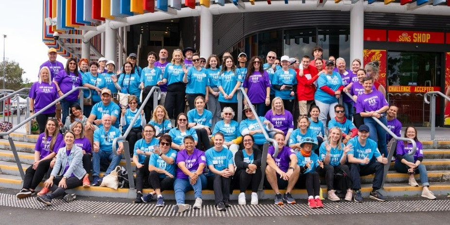

Strong satisfaction, with clear practical suggestions.
Guests reported a highly positive experience, while open feedback identified concrete improvements around navigation and service gaps.
- Donations and material goods were the most visited service.
- 70% of guests rated the event 9 or 10.
- Better maps and signage was the leading improvement request.
- Eye care was the clearest requested service gap.
Improve maps & signage
Make service locations easier to understand and navigate.
Explore eye care
Eye tests / optometry were one of the clearest requested additions.
Strengthen outreach
Consider how advertising can bring the event to more people who may benefit.

The event grew significantly — and guests were even more positive than before.
51 guests and 43 service providers were surveyed in 2025, both up significantly from 2024. We analysed the words guests used to describe the day — and 82% were positive.
- Donations and material goods were the most visited service.
- 70% of guests rated the event 9 or 10.
- Better maps and signage was the leading improvement request.
- Eye care was the clearest requested service gap.
Words shown larger appeared more often. Red words = positive. The 3 mixed responses raised specific operational issues, not general dissatisfaction.

The best year yet: 100% of guests used positive words to describe the day.
108 guests and 44 service providers were surveyed in 2026. Average satisfaction reached 9.2 out of 10, the highest across all three years and every single one-word description was positive.
- 100% of guest one-word descriptions were positive.
- Housing support was guests' most requested service.
- Two-thirds of guests found all the services they came for.
- 100% of service providers said they would return.

Three years of community impact
This page brings together guest and service provider feedback to show how Connect 2 Home has developed, what community needs have changed, and what future editions can learn from the evidence.
Housing support
From event feedback to future planning.
Connect 2 Home brings people experiencing homelessness together with local community services and organisations.
Across three years of feedback, Connect 2 Home evolved from providing immediate support needs to creating pathways towards longer-term outcomes. Provider reflections increasingly focused on guests accessing housing, connecting with services and making progress beyond the event itself.
The purpose of this dashboard is not only to report survey results, but to make changes across editions easier to see.
Community priorities evolved over time.
Donations and material goods dominated guest responses in 2024 and 2025, while housing support became the leading need in 2026.
Donations and material goods were the most common reason for attending.
Donations remained the largest service category.
Housing support overtook donations as the largest identified need.
While survey data shows trends and outcomes, provider reflections help illustrate the human impact behind the numbers.
Providers most often described helping people, giving back to the community and making guests feel seen.

Feedback increasingly focused on connecting guests with services and building community connections.

Provider reflections increasingly focused on housing outcomes, service connections and longer-term support.
Some priorities remained consistent across all three years despite changes in guest needs.
| Need / improvement | Years |
|---|---|
| Eye care | 24 · 25 · 26 |
| Maps & signage | 24 · 25 · 26 |
| Housing support | 24 · 25 · 26 |
| Advertising / outreach | 24 · 25 |
Eye care, housing support and event wayfinding were repeatedly identified as areas requiring ongoing attention.
Use the next edition to test what the data suggests.
The strongest use of this dashboard is as a planning tool. The annual pages show the detail, while this section highlights the kinds of questions the organisation can carry into the next event.
Review signage, maps and service directories so guests can find the right support more easily.
Consider whether the provider mix adequately reflects the growing demand for housing-related support.
Continue considering advertising and outreach so people who could benefit know about the event.